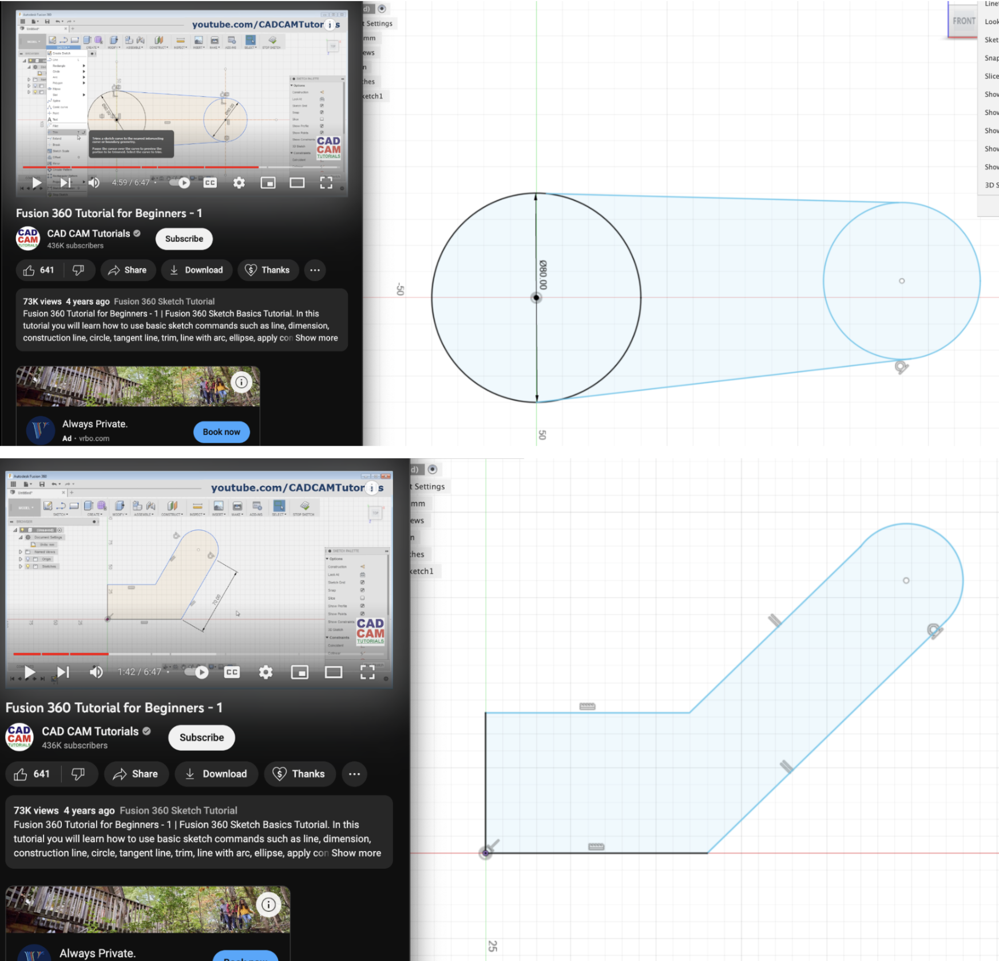

<h1><p style="font-family:georgia; font-size:x-large"> <i><b> CUTTING </i></b> </p> </h1>
<p style="font-family:'Gill Sans', 'Gill Sans MT', Calibri, 'Trebuchet MS', sans-serif"> this week, i made a little chair, completed a fusion 360 tutorial, and used fusion 360 to model two of my jade pendants. </p>
<h2><p style="font-family:georgia; font-size:x-large"> <i><b> felicity's chair 🪑 </i></b> </p> </h1>
<p style="font-family:'Gill Sans', 'Gill Sans MT', Calibri, 'Trebuchet MS', sans-serif"> i made a chair for my roommate’s mini american girl doll and our suite mascot, felicity. felicity is a student at the div school, and her favorite book is “the protestant ethic and the spirit of capitalism.” in her free time, felicity enjoys lounging around mather with her sister, big felicity, and her cow, mioo mioo. felicity is also an experienced model; here, on the left, she is seen sporting my midterm project for an art history course last fall. on the right, she is seen enjoying her new chair. </p>
<img src="week2.1.png" alt="felicity" width="1000" </img>
<p style="font-family:'Gill Sans', 'Gill Sans MT', Calibri, 'Trebuchet MS', sans-serif"> her chair is made from roughly 300 puzzle pieces constructed from cardboard, cut with the laser cutter. to create these pieces, i made a rounded square measuring .75inx.75in in fusion360, then took out little spots so they could fit together. i measured the thickness of the cardboard (2.6mm) then added a little cushion for kerf. they fit together on the first go 🥳 🥳 🥳, so i did not need to readjust anything. i printed all my pieces, then i scuttled back to mather to create my chair. i freestyled the assembly until i got a chair. </p>
<h3><p style="font-family:georgia; font-size:x-large"> <i><b> modeling jade </i></b> </p> </h1>
<p style="font-family:'Gill Sans', 'Gill Sans MT', Calibri, 'Trebuchet MS', sans-serif"> i chose to model my jade pendants for this project. </p>
<p style="font-family:'Gill Sans', 'Gill Sans MT', Calibri, 'Trebuchet MS', sans-serif"> first, i measured the pendants using the calipers. the light one was 44.7mm in length, 21.65mm in width at the top and 34.4mm in width at the bottom. the height, including bezel, was 5.2mm. it was challenging finding the height inside the pendant (without the bezel), but i guestimated that it was roughly .75mm. the dark one was 46.81mm in length, 3mm in height, with the gold plating at about .54mm in height. i measured down the figure at various intervals to calculate the slope of the pendant. then, i began drawing an outline in fusion360 using the fit point spline. i extruded it, then added the bezel and gold plating. i then attempted to add some designs on top of the pendants, but i ran into lots of difficulties using fusion360 and a trackpad to make detailed drawings. instead of being super accurate, i hope my model captures the ~spirit~ of the pendant. finally, i added colors using the ‘appearance’ section. finally, i assembled them by placing them in the same plane </p>
<h3><p style="font-family:georgia; font-size:x-large"> <i><b> fusion360 tutorial </i></b> </p> </h1>
<p style="font-family:'Gill Sans', 'Gill Sans MT', Calibri, 'Trebuchet MS', sans-serif"> i completed a tutorial to learn the basic features of fusion360. it was super helpful, as i learned how to use the line tool, the circle tool, the clippers tool, etc. </p>
